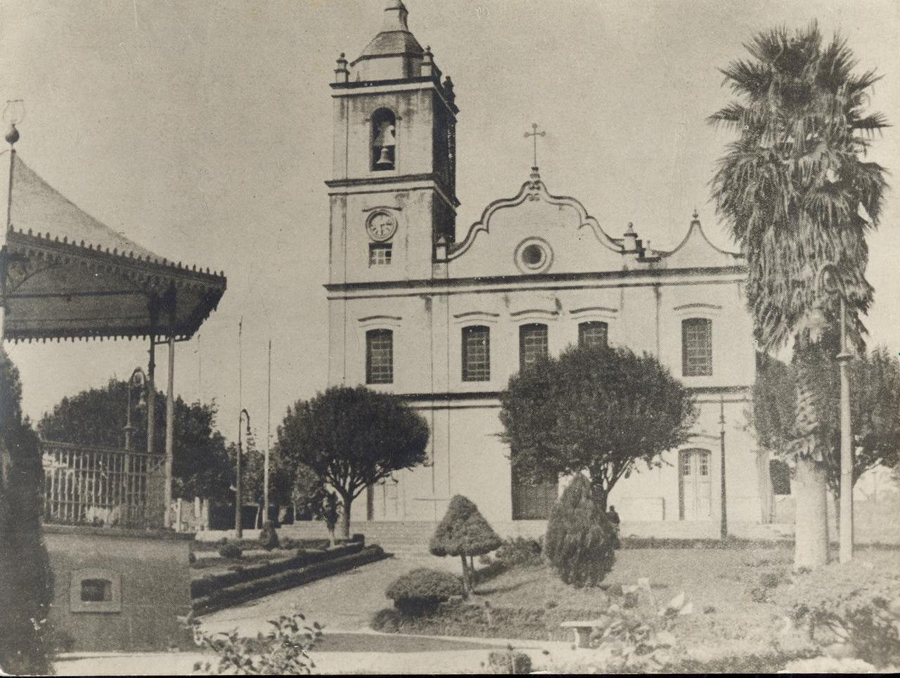
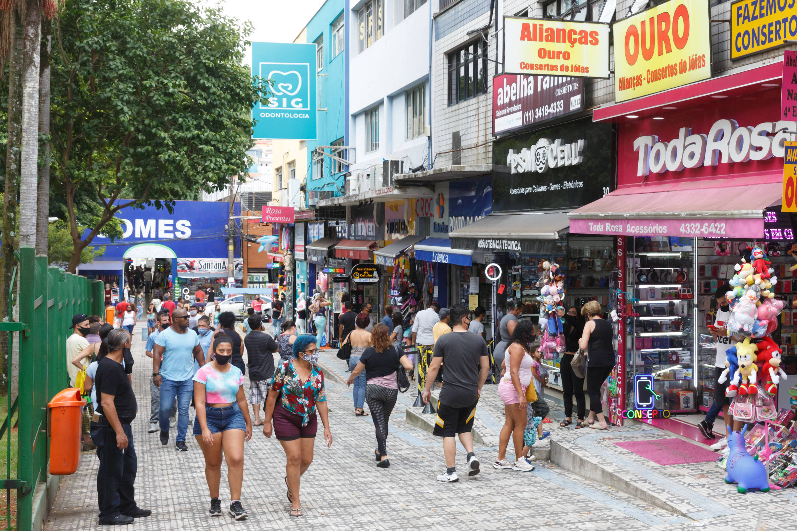

A cidade do trabalho

São Bernardo do Campo é uma cidade rica em história e de grande representatividade no cenário nacional. Inicialmente conhecida como “capital dos móveis” pelo grande número de indústrias moveleiras que ajudaram a desenvolver a cidade no início do século XX, foi também, mais tarde, berço da indústria automobilística nacional. Aqui também nasceram o sindicalismo e os importantes movimentos trabalhistas que trouxeram grandes avanços para o segmento.
São Bernardo foi sede da primeira companhia cinematográfica brasileira, dona de circuitos gastronômico e ambiental reconhecidos em todo o País. A importância desta cidade não se dá apenas pela questão econômica e cultural, mas ainda por sua localização estratégica.
Um lugar cada vez melhor de se viver!

De acordo com dados de 2015, do Instituto Brasileiro de Geografia e Estatística (IBGE), o município de São Bernardo do Campo tem o 16º maior produto interno bruto (PIB) entre as cidades brasileiras, com 42,7 bilhões de reais, ou 0,71% do PIB brasileiro. Desde a década de 1950, o município tem sua economia baseada na indústria automobilística - sede das primeiras montadoras de veículos do Brasil, tais como Volkswagen, Ford, Scania, Toyota, Mercedes-Benz, Karmann Ghia e Willys-Overland - além das indústrias de autopeças que as suportam, de indústrias de tintas, como a Basf, que produz as tintas Suvinil, e da maior planta industrial do mundo de dentifrícios da Colgate-Palmolive.
Cidades Irmãs: Uma curiosidade
Cidades-irmãs é uma iniciativa do Núcleo das Relações Internacionais, que busca a integração entre a cidade e demais municípios nacionais e estrangeiros. A integração entre os municípios é firmada por meio de convênios de cooperação, que têm o objetivo de assegurar a manutenção da paz entre os povos, baseada na fraternidade, felicidade, amizade e respeito recíproco entre as nações. Algumas das cidades-irmãs estrangeiras de São Bernardo pode-se citar:
- Linköping (Suécia)
- Aveiro (Portugal)
- Havana (Cuba)
- General San Martín (Argentina)
- Shunan (Japão)
- Vittorio Veneto (Itália)